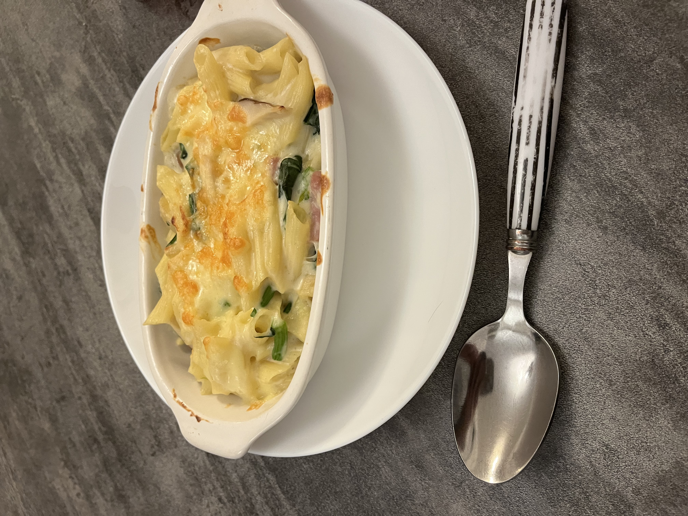

きのこ記録
11/16（1日目）

栽培の準備を始めました。触ったときに土に近い触り心地で驚きました。
11/18（3日目）
二回目の水やりとは思えない成長でした。きのこの成長は早いなと考えました。
11/11（6日目）
きのこが大きくなっていました。もう収穫できるなと考えました。
11/13収穫前（8日目）
初めて見るくらい大きなきのこになりました。食べごたえがありそうだなと思いました。
11/13収穫後（8日目）
大きなきのこがたくさん取れました。きのこを切るのは楽しかったです。
11/13収穫後（8日目）
なにもなくなった。
料理
きのこグラタン
この材料できのこ入りグラタンを作っていきます。
具材を炒めていきます。

家族に褒めてもらえました。上手にできました。